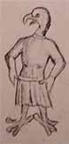

|
|
 |
|
|
Il Picatrix si presenta come un manuale di magia
simpatetica e astrale. Redatto
in lingua araba probabilmente nel 12° secolo, esso custodisce
il segreto
dell'arte talismanica, come veniva praticata dagli
arabi di Harran.
Si deve la traduzione in latino di questo testo ad
opera di Alfonso il Saggio.
Il Picatrix beneficia di una grande diffusione
durante il Rinascimento,
esercitando una notevole influenza su Pietro d'Abano,
Marsilio Ficino ed
Enrico Cornelio Agrippa.
Anche Pico della Mirandola ne possedeva una copia
nella propria biblioteca.
In seguito, il testo cadde progressivamente nell'oblio.
|
|
|
|
|
Perfetto manuale del mago, il Picatrix è uno
dei più grandi e dei più completi trattati di magia.
Esso svela ogni genere di formula, ad esempio: "come distruggere
una città con il Raggio del Silenzio", "come influenzare gli
uomini a distanza". Il testo riporta inoltre un elenco di immagini
magiche con le relative indicazioni per l'uso e tratta delle
affinità tra piante, pietre, animali e
pianeti, nonché del modo di utilizzare tali affinità per fini magici.
Il Picatrix evoca inoltre la potenza di immagini magiche,
presentando Ermete Trismegisto come l'inventore delle
stesse. I vari talismani
e le procedure descritti hanno obiettivi ben
precisi: guarire dalle malattie, vivere a lungo,
avere successo, evadere dalla prigione, dominare i propri nemici,
attirare su di
sé l'amore di un'altra persona e così via.
|
|
 |
|
 |
| Secondo Ghâyat Al-Hakim, il cosmo è
composto da tre mondi:
"materia, spiritus et intellectus" (materia, spirito e
intelletto). Tutta la
magia del Picatrix consiste nella capacità di captare,
quindi di guidare l'influsso dello spirito di un astro
verso la materia per mezzo di talismani.
A tal fine, l'opera rivela la seguente procedura: incidere le
immagini delle stelle sul supporto adatto.
Il Picatrix si presenta sotto forma di 4 libri:
|
| • |
I libri I e II enunciano preghiere e
promesse di rivelazioni
profonde insieme ad un approccio filosofico
all'ordine della natura.
Vi si trova esposta l'arte della costruzione dei talismani,
che richiede approfondite conoscenze di astronomia,
musica e metafisica. L'autore redige un elenco delle
immagini che possono comparire sui talismani,
che corrispondono ai pianeti e ai 36 decani riuniti
intorno al rispettivo segno zodiacale.
|
|
|
|
|
|
|
Per i tre decani dell'ariete,
vengono riportate le seguenti immagini:
|
|
|
|
|
|
"Nella prima casa dell'ariete,
sale un uomo con gli occhi rossi, una folta e
lunga barba avvolta in un drappo di lino bianco; costui fa ampi gesti
mentre cammina, cinto da una fascia rossa, e sta con un
solo piede posato
per terra, come se stesse guardando ciò che gli sta di fronte.
Nella seconda casa dell'ariete, sale una donna che indossa
una fascia e un abito rosso, la quale ha un solo piede e
la cui figura ricorda un cavallo agitato e
imbizzarrito. Essa cerca il proprio figlio,
abiti ed ornamenti e la propria figlia.
|
 |
|
|

|
|
Nella terza casa dell'ariete, sale un uomo bianco
e rosso con i capelli rossi,
apparentemente adirato e molto inquieto, che tiene
nella mano destra una spada e nella
sinistra un corno e vestito in rosso. È dotto e sapiente
nelle scienze e abile maestro
nell'arte di lavorare il ferro. Desidera il bene e non il male."
|
|
| |
|
|
|
|
Ciascuno dei sette pianeti
dispone inoltre di un elenco di immagini che gli sono proprie.
L'insieme delle descrizioni è accompagnato, al termine dell'opera,
da una singolare iconografia da incidere sui talismani a
seconda dell'astro che si desidera invocare.
|
|
|
| |
|
 |
|
 |
|
 |
|
| |
Un'immagine del Sole
|
Un'immagine di Giove
|
Un'immagine di Venere
|
|
|
| |
| |
|
| • |
I libro III tratta di pietre,
piante, animali e altri elementi che corrispondono
|
|
ai vari pianeti e segni in modo tale da essere
in grado di invocare gli spiriti
dei pianeti tramite il loro nome e il loro potere. |
|
|
| • |
Il libro IV è dedicato
alle fumigazioni e alle orazioni planetarie. |
|
|
|
| |
|
|
Più concretamente, il
Picatrix svela ogni sorta di formule contro le
malattie o per attirare su di sé le influenze benefiche.
|
|
|
| |
|
| • |
Per sconfiggere un nemico:
"Disegnate due immagini, una nell'ora del Sole, il
Leone ascendente e la Luna calante dell'angolo
dell'ascendente, l'altra nell'ora di Marte
sotto l'ariete, Marte ascendente e la Luna calante.
Fate questa immagine a
somiglianza di un uomo che ne percuote un altro, poi
sotterratela nell'ora di
Marte quando la prima casa dell'ariete ascenderà.
Quando avrete fatto ciò, potrete comandare ai vostri
nemici e dominarli come vi pare." |
| |
|
| • |
Per guarire una ferita o
una piaga: "Disegnate l'immagine di uno scorpione su
una pietra di bezoar nell'ora della Luna e quando essa
sarà nella seconda casa dello Scorpione e il Leone, il Toro
o l'Acquario saranno ascendenti, incastonerete la pietra
in un anello d'oro e sigillerete l'incenso reso molle nella
suddetta costellazione, quindi ne darete da bere al ferito.
Tali sigilli faranno scomparire l'incenso e subito fascerete
la piaga." |
| |
|
| • |
Per moltiplicare le messi
e le pianti: "Disegnate delle immagini su una lamina
d'argento, raffigurando un uomo seduto con attorno messi,
alberi e piante. Fate ciò
mentre la luna va dal Sole verso Saturno e sotterrate
la lamina in qualsiasi
luogo vogliate. Tutte le piante si troveranno lì e tutte
le sementi vi cresceranno
prontamente senza subire alcun danno da animali,
uccelli o tempeste." |
| |
|
|
|
|
| |